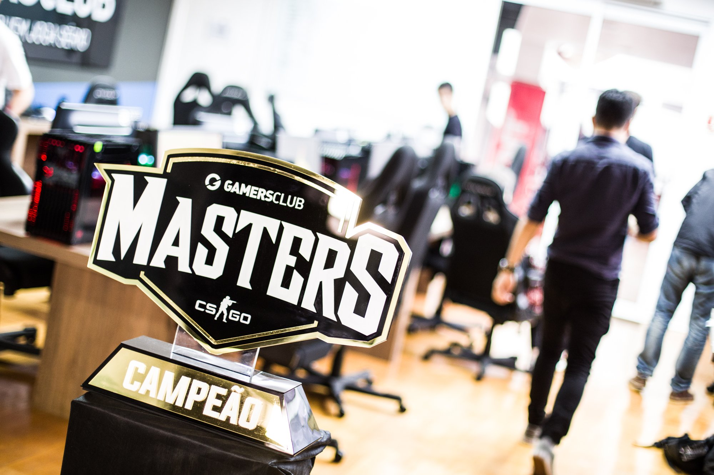

Foto: Felipe Guerra
O grande vencedor da Gamers Club Masters foi coroado. Neste domingo (21), aconteceu a grande final do chamado "Major Brasileiro"
de Counter-Strike: Global Offensive, em que a Team Wild venceu a W7M Gaming por 2 a 0.
A grande decisão contou com três mapas acirrados entre as finalistas. O primeiro, Nuke, foi pontuado por uma vitória afirmativa
da Team Wild por 16 a 9. Em Train, contudo, aconteceu a reposta da W7M Gaming, mas os adversários responderam
a altura e confirmaram a vitória por 16 a 14., e Inferno, .
As finais presenciais da Gamer Club Masters tiveram início na última sexta-feira (19) e contaram com oito equipes disputando
pela premiação total de R$ 50 mil. Segundo a própria Gamers Club, a última fase do campeonato teve grandes influências
do famoso CS_Summit, com um clima mais leve, descontraído e casual de transmissão.
Conhecido por ser o maior torneio de CS:GO da América Latina, a Gamers Club Masters contou com a participação de mais de
2 mil jogadores de 12 regiões do continente. A transmissão das disputas foi realizada na Twitch e no Youtube.
Para saber ainda mais da GC Masters, visite o site oficial da competição.